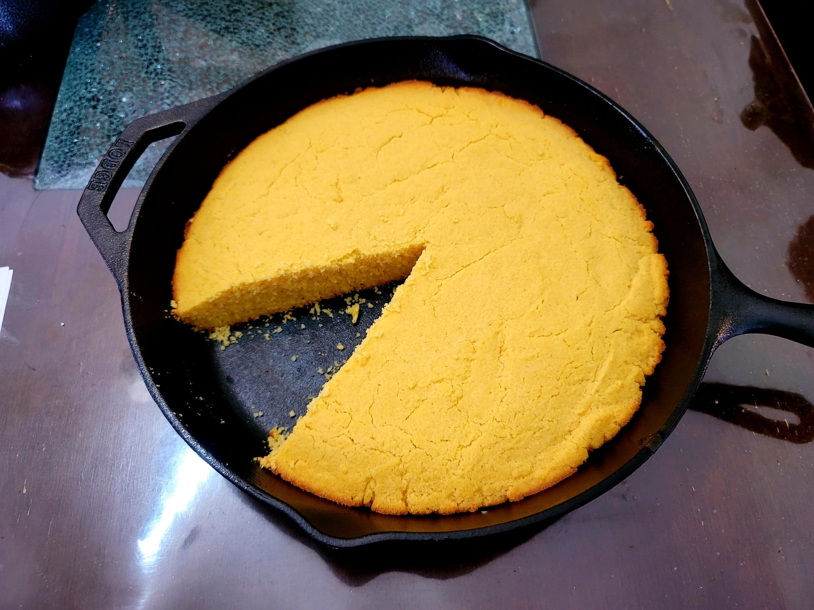

Southern Cornbread

Ingredients:
- 2 1/2 cups White fine cornmeal
- 1 tbsp Baking powder
- 1 1/2 tsp Salt
- 1 3/4 cup Buttermilk
- 3 Eggs
- 2 tbsp Brown sugar, packed
- 3 tbsp Bacon grease
Instructions:
- Preheat an oven to 425 degrees Fahrenheit.
- Combine the cornmeal, salt, and baking powder into a large bowl and whisk together.
- Into a separate large bowl, whisk together the buttermilk, eggs, and brown sugar. Then slowly whisk the dry ingredients into the wet ingredients until homogenous.
- Place the bacon grease into a 12 inch cast iron skillet and heat until melted. Tilt and swirl around the pan until coated all over with the bacon grease. Then pour any excess bacon grease into the batter and whisk it in.
- Pour the batter into the skillet and flatten. Place into the oven and bake for 20-25 minutes, or until a toothpick comes out clean. Serve hot.